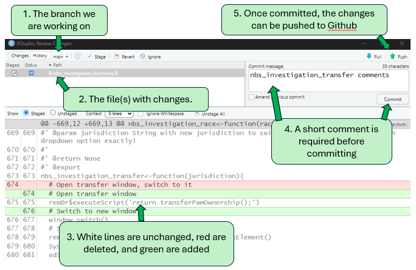

Github Basics
This section covers the basics of how Github works. There are a lot of resources online that can also help you understand. Github is a website that is based on Git. Git is a common version control software.
What is Git
Git was developed to track changes in software over time, with multiple people working on the same code at once. You can download Git onto your PC and use it without worrying about Github at all. The diagram below shows how a project is developed using Git version control.

The project starts in an initial state, called the main (sometimes master) branch. In the diagram above, the main branch is colored green. Each circle is the code at a point in time, referred to as a commit. When a change is made to the code, you must choose to commit the change to the version history. You will also be asked to write a short description of what you changed or added. Uncommitted changes are considered staged, since they are waiting to be accepted or rejected.
For minor fixes, like correcting a typo, you could edit the main branch of code and commit the changes to it directly. But sometimes a change is more involved, and working on it will take time. Furthermore, sometimes you need to make changes to the foundations of a script that render it non-functional, but other people rely on the code to keep running. In this case, Git allows you to create a branch (in blue and orange above). Branches are a copy of the code that is separate from the main, functional code. You can then make edits to your branch without breaking the functional code. When you have finished work on the branch, you can then merge your changes into the main branch. In the diagram above, the blue branch took three commits to finish, whereas the orange commit only took one.
When making a commit, or merging a branch into main, you will have the opportunity to review the old version of the code and the new version. This is so each change is highlighted and looked over before it is added to the version history. The above process allows for complex projects with several contributors to be developed with a clear history of who did what and when, with the ability to go back to previous versions of the project, if need be.
A Git project can consist of one or more files that are located together in a folder. This location, and the files in it are known as a repository, or repo. All the files and subfolders in the repo are included in the project’s version control. Git can be used by typing commands into a terminal or command prompt, but other tools (Github, Rstudio, etc.) provide a user interface that can make getting started easier.
Here are the key terms from the description above:
Version control - Tracking, recording, and organizing changes to a project over time
Git - a version control software
Main - The base version of a project
Branch - a copy of the main project, where changes can be made
Staged Change - an edit to a file in a repo that has not been committed
Commit - Officially adding a change to the version history (to the main project, or to a branch)
Merge - Adding changes from a branch back into the main project
Repository - A location that contains the files and folders that make up a project
What is Github
As stated above, you can use Git locally on your own computer. In this case, you are working on a local repository, or a project on your own computer. Github is a remote repository; a place to store the code that is not your own computer. This allows the code, with all its version history, to be available to everyone (a public repo), or github users with certain permissions (a private repo).
You can take an existing local Git repository and push it up to Github. Most code editors can easily integrate with Git and Github, to facilitate communication between your local repo and Github’s remote repo. After working on some changes to the code and making one or more commits, you can push the changes up to Github (syncing the Github repo to align with your local repo). Conversely, you can pull the current version of the project from the Github repo to your own local repo in order to make changes off of it. This is useful for projects with multiple collaborators. You will typically all use Github as the hub for development; pull down the current version of the project with the most recent changes from others, make and commit your changes locally, then push them back to Github. Then others can do the same.

Pulls and pushes happen to branches of a repository, but you should start off by working on a small project with only a main branch. Here is an example of the code review panel in R for a small documentation change:

Here are the key terms from the description above:
Local Repo - A group of files and folders that make up a project, stored on your own computer
Remote Repo - A repo stored on a remote server, like Github
Pull - Copying a remote repo from Github to a local repo on your machine
Push - Updating a remote Github repo to reflect commits made to your local repo
Common Elements of a Repo
Many different file types can be placed into a repo, but there are some items which are commonly used to make working with Git/Github easier. None of these are strictly required (except for a license, potentially), but you should use them.
Readme
A file that explains the purpose of the project, and any useful documentation on how to use the code inside. In Github, readme files should be markdown documents (i.e., readme.md). When structured this way, the readme information will be rendered in the Github repo.
.gitignore
The .gitignore file allows you to specify files and folders that should not be included in the version control tracking. These files can be housed inside the repo folder, and could be critical to the functioning of the code (e.g., important data for analysis), but changes to these files are not tracked, and they won’t be pushed to Github. Specific files can be listed in the .gitignore, or patterns that exclude multiple items (e.g., all PDFs, all files with “PHI” in the name, all files in a subfolder)
Subfolders
The main folder of a repo can store files, but it can also help to organize files into subfolders. Common subfolders are for data, scripts, or images
License
Since the code put into public repositories can be seen and copied by anyone, you likely need a license that describes how the code can be used by others [what is the TDH default license? Does this need to be mentioned in security?].
Credentials
You will need to link your computer to your Github account. Options include:
Git terminal
Git UI [maybe?]
IDE capabilities
You should only need to set your credentials once [pending security concerns]. Once set, any commits/pushes/pulls/etc. will include your name, and you will have the ability to access private repositories for your teams.